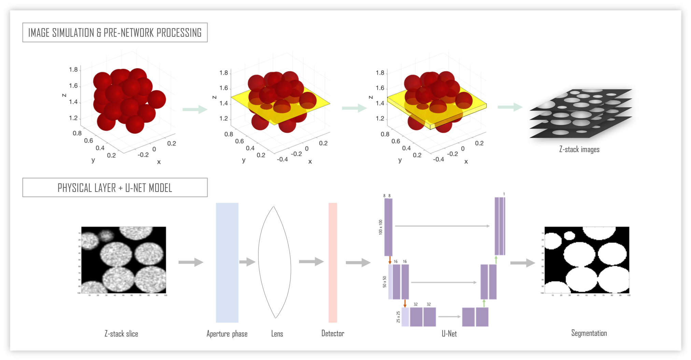
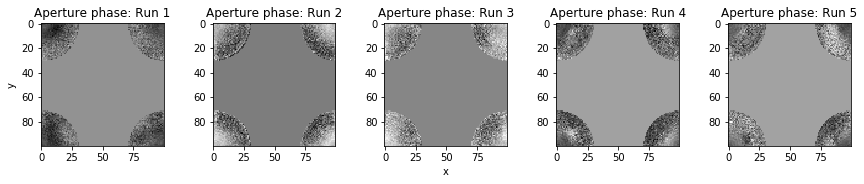
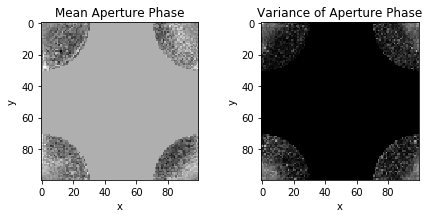

| Paper PDF |

|
Granular hydrogels are emerging as a versatile and effective platform for tissue engineered constructs in regenerative medicine. These biomaterials are often studied and utilized in the jammed state where packed particles form a scaffold structure through which cells may migrate. The microscopic granular scaffolds are frequently imaged not only to assess bulk material properties, but also to analyze individual particle size, cell-scaffold dynamics, and void space geometries. In order to accurately analyze scaffold data gathered from imaging techniques, it is essential to effectively delineate individual particles in images. Here, we implement machine learning techniques applied to simulated confocal microscope z-stack images of granular hydrogel scaffolds in order to segment the images into particles and void space. Methods: Training data was generated in MATLAB and processed prior to entering our network. Our model trains on the aperture phase within our physical layer and uses a U-Net for our segmentation method. Results: Our evaluation metric of intersection over union (iou) was greater than 97% for 5 out of 5 runs, and we report the average aperture phase returned by our network. Conclusion: Our model was able to accurately segment particles on our preliminary training datasets. Further studies will expand to larger simulated datasets, as well as real microscope images. |


|
|
| Paper: |
Code and Data:
|